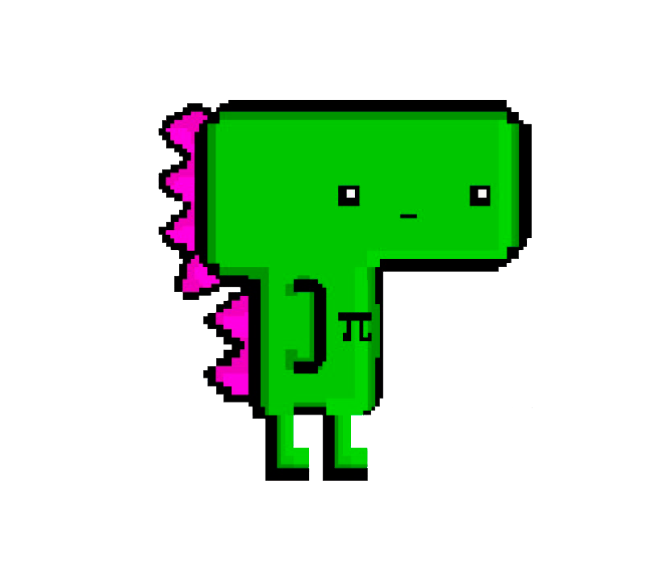
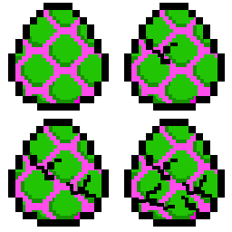

Mais em Behance.
Comecei a estudar Design
Gráfico em 2014 e atualmente curso Análise e
Desenvolvimento de Sistemas pela FATEC. Com o tempo fui me
interessando cada vez mais
em design e em metodologia ágil, fui conhecendo e aplicando tecnicas de UX, praticando
as 10 heurísticas e usando como vantagem no mundo tecnológico
conceitos de design que ajudam na prevenção de erros e em projetos mais intuitivos.
Junqueira Serralheria Logo
Junqueira Serralheria folder
Mais em Behance.
Trabalho acadêmico, feito juntamente com alunos que são funcionários da empresa Quero Educação, sobre ideias de programas que causem impacto na sociedade (trabalho de Engenharia de Software, do curso de Análise e Desenvolvimento de Sistemas, pela FATEC São José dos Campos)
Quero República
Quero República
No trabalho havia sido feita uma prototipação da plataforma pela ferramenta InVision.
Mais em Behance.